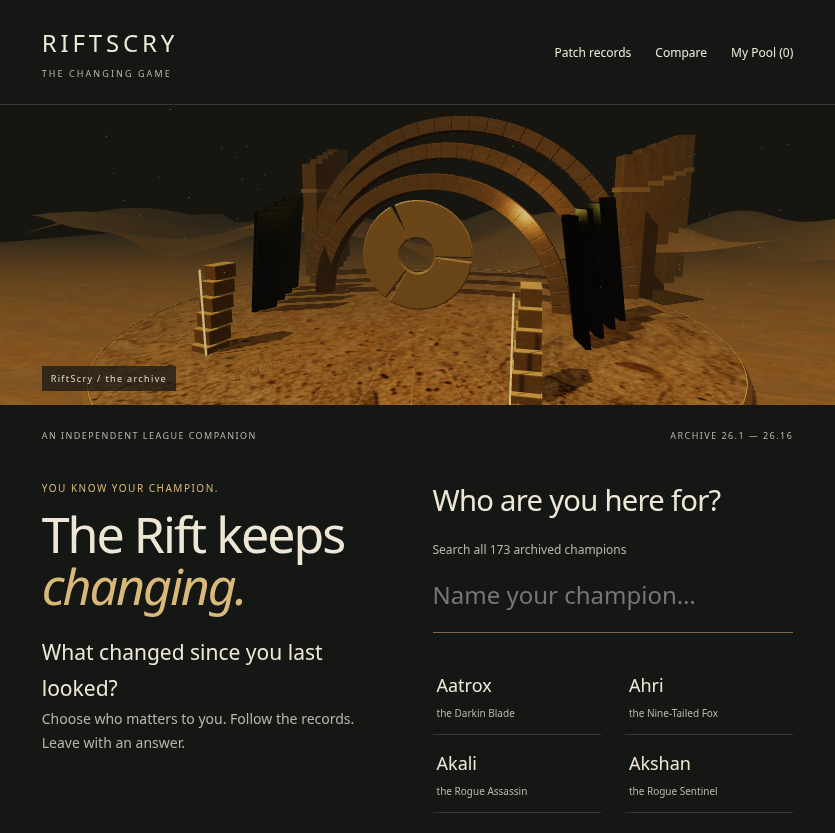
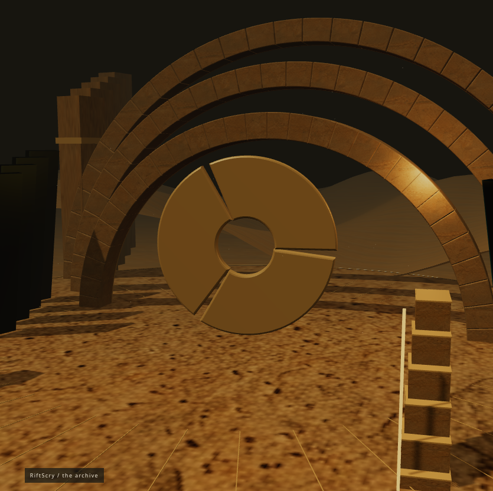
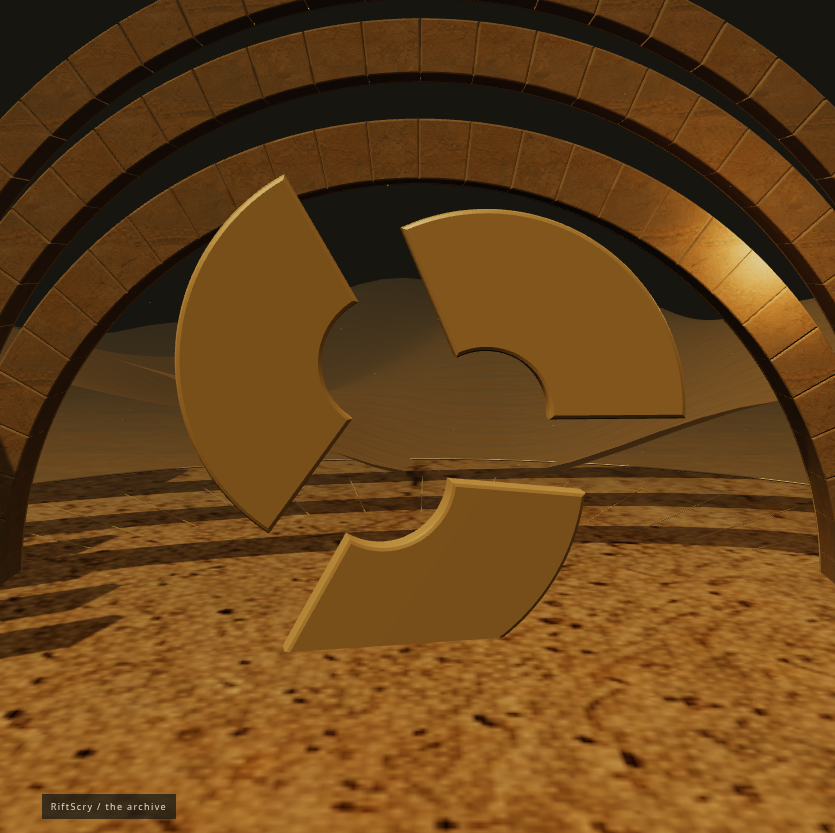
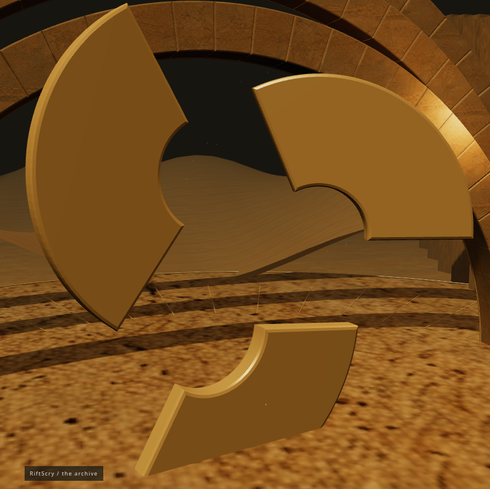
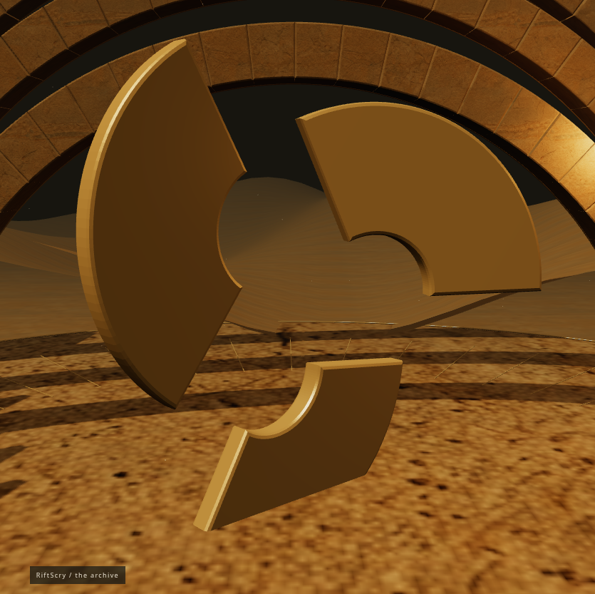
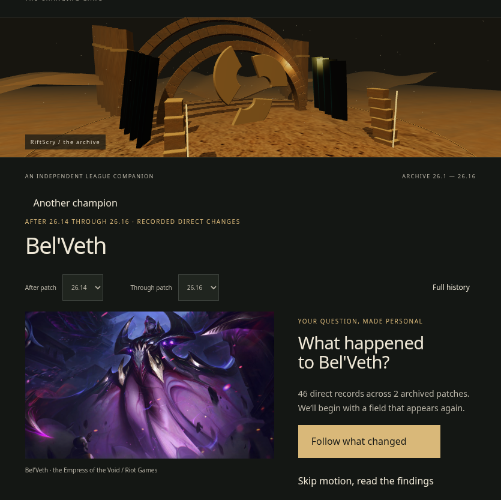
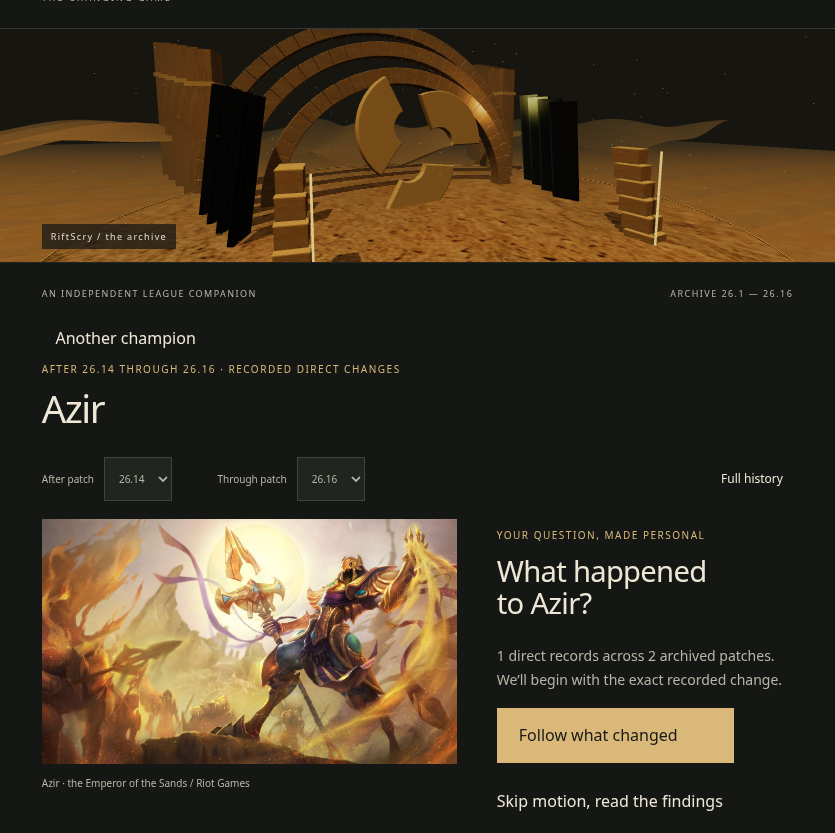
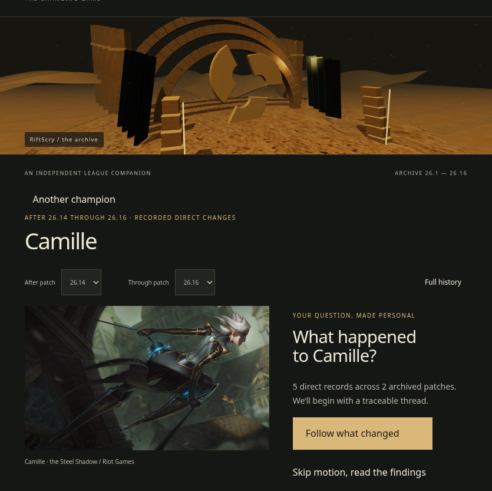
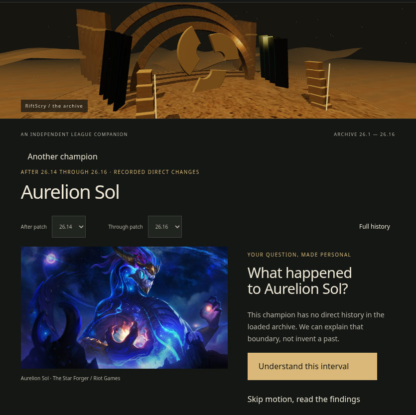

Baseline continuity, not a reskin


RIFTSCRY / INDEPENDENT COMPANION
The complete-roster investigation replaces the two-picture journey. Choose a champion and an explicit interval; follow exact evidence, change focus, and reach a source-backed conclusion. The brass aperture separates, exposes its planes, aligns where a return is established, and reassembles at the ending.
Open the story · Script, shot sheet and rights · Validation and limitations · Official artwork manifest · Measured lab performance
Recordings use an isolated production build and Chromium ANGLE SwiftShader (software WebGL), not a physical GPU. A fallback recording is never presented as proof of the cinematic. Physical-device performance, Safari and owner-side Riot registration remain unverified. Software-rendered frame pacing is poor (317 ms median). The world-resolution frame is transitional, not a settled ending. These are review materials, not release acceptance; the recorded Web Vitals are contaminated by the UI-hiding test.
Bel’Veth, after 26.14 through 26.16. Health growth 105 → 110 → 105. The recording continues into an R-focused investigation with a different ending, restores a stable URL, and explicitly saves to the existing pool.
Azir’s simple numerical change, Bel’Veth’s mixed ranks and qualitative rule, and Ahri’s shorter no-record branch. The second recording uses reduced motion and includes a separately labeled still-renderer fallback.
Internal creative review: the accessible data interface is temporarily made transparent only in the test browser. The deployed experience retains it. The three solid leaves separate, expose their depth, align for the recorded return, and assemble at resolution. The latter part reviews intact artwork compositions.









The roster is the project’s metadata snapshot, not a claim to the live game’s roster. The archive contains 26.1–26.16. Intervals are (older, newer]; conclusions describe direct recorded changes, not reconstructed champion state or competitive strength. A verified return requires the same field, unit, adjacent archived patches and matching scalar endpoints. Rank-dependent and rule changes keep the complete source strings.
Every roster entry has the same entry, investigation and ending. Missing illustration delivery produces an explicit artwork fallback without replacing the champion. No history and no direct changes are separate branches. Registration and monetization approval cannot be established from this repository; no monetization was added.
RiftScry is not endorsed by Riot Games and does not reflect the views or opinions of Riot Games or anyone officially involved in producing or managing Riot Games properties. Riot Games and all associated properties are trademarks or registered trademarks of Riot Games, Inc.